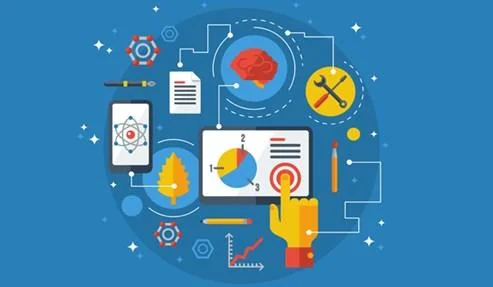
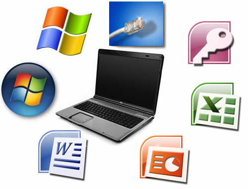

Temas: Fundamentos de hardware y software,
mantenimiento preventivo de computadoras,
instalación y configuracion de sistemas operativos,
Resolucion de problemas de hardware y software,
redes de computadora y conectividad,
Seguridad informatica y proteccion de datos,
gestion de dispositivos moviles,
virtualizacion y computacion en la nube,
administracion de sistemas y redes,
pricipios y gestion de proyectos en TI
_
El curso IT Essentials proporciona una base sólida en hardware y software para aquellos interesados en el campo de la tecnología de la información. También se abordan conceptos de redes y seguridad, incluyendo la protección contra virus y malware.Esto incluye identificar fallas de hardware, solucionar problemas de conectividad de red y resolver conflictos de software. En resumen, IT Essentials ofrece una introducción completa a los aspectos fundamentales de hardware y software en tecnología de la información, preparando a los estudiantes para roles en soporte técnico, administración de sistemas y otras áreas relacionadas con la informática.
Se cubren aspectos básicos de hardware, incluyendo componentes internos de computadoras como procesadores, memoria RAM, discos duros, tarjetas madre, y unidades de almacenamiento.

Se exploran los sistemas operativos, incluyendo instalación, configuración y mantenimiento de sistemas como Windows y Linux.
También se abordan conceptos de redes y seguridad, incluyendo la protección contra virus y malware.

Se enseñan técnicas para diagnosticar y solucionar problemas comunes de hardware y software.
Esto incluye identificar fallas de hardware, solucionar problemas de conectividad de red y resolver conflictos de software.

Se cubren conceptos básicos de seguridad informática, como protección de datos, contraseñas seguras, y prácticas de seguridad en línea.

Se recomienda mantener actualizados los sistemas operativos y otros programas para evitar vulnerabilidades de seguridad y garantizar un rendimiento óptimo.

Se enfatiza la importancia de realizar copias de seguridad regulares de los datos importantes. Esto se hace para proteger contra la pérdida de datos debido a fallas de hardware, errores humanos o ataques cibernéticos.

Se ofrecen técnicas para mejorar el rendimiento de la computadora, como la desfragmentación del disco duro, la eliminación de programas innecesarios y la optimización de la configuración del sistema.

Se enseña a los estudiantes a preparar el equipo y los medios de instalación necesarios antes de comenzar el proceso de instalación del sistema operativo.

Se guía a los estudiantes a través del proceso de instalación del sistema operativo, incluyendo la selección del tipo de instalación , la configuración de particiones de disco y la instalación de controladores de dispositivos necesarios.

Después de la instalación, se enseña a los estudiantes a realizar configuraciones básicas en el sistema operativo, como la configuración de la fecha y la hora, la configuración de la red y la creación de cuentas de usuario.
Se cubre la importancia de mantener actualizado el sistema operativo para garantizar la seguridad y el rendimiento óptimo.
Se ofrece orientación sobre cómo personalizar el sistema operativo de acuerdo con las preferencias del usuario y cómo optimizar su rendimiento.
Esto puede incluir la configuración de ajustes de energía, la instalación de software adicional y la personalización del escritorio.
Se proporcionan técnicas para diagnosticar y solucionar problemas comunes durante el proceso de instalación y configuración del sistema operativo.
Se enseña a los estudiantes a identificar y definir claramente los problemas que puedan surgir en el hardware o el software de una computadora.

e proporciona información sobre diversas herramientas y técnicas de diagnóstico disponibles para ayudar en la identificación de problemas de hardware y software.
*Esto puede incluir el uso de software de diagnóstico, comandos de sistema, herramientas de monitoreo de hardware, entre otros.
Se cubren los pasos necesarios para diagnosticar y solucionar problemas comunes de hardware, como fallas de componentes, errores de conexión, problemas de alimentación, y errores de memoria.
-LAN: Red local, generalmente dentro de un edificio.
-WAN: Red que cubre áreas geográficas extensas.
-Man: Red que cubre un área urbana.
-PAN: Red para uso personal, como Bluetooth.

Es la estructura de interconexión de los dispositivos en una red.
-Estrella: Todos los nodos conectados a un nodo central.
-Bus: Todos los nodos conectados a un único cable central.
-Anillo: Cada nodo conectado al siguiente y el último al primero.
-Malla: Todos los nodos están interconectados.

Medios de Transmisión:
-Cables: Ethernet (cable de par trenzado), fibra óptica.
-Inalámbricos: Wi-Fi, Bluetooth, radiofrecuencia.
Reglas que determinan cómo se transmiten los datos.
-TCP/IP: Protocolo fundamental de Internet.
-HTTP/HTTPS: Protocolo para la transferencia de páginas web.
-FTP: Protocolo para la transferencia de archivos.

Son componentes físicos o lógicos que facilitan la transferencia de datos entre diferentes sistemas en una red.
Estos dispositivos permiten la comunicación y el intercambio de información entre ordenadores, servidores,y dispositivos de almacenamiento y otros componentes conectados a la red.
-Router: Dispositivo que direcciona el tráfico entre redes diferentes.
-Switch: Dispositivo que conecta dispositivos dentro de la misma red.
-Access Point (AP): Dispositivo que permite la conexión inalámbrica a una red.
-Firewall: Dispositivo que protege la red de accesos no autorizados.

-Cifrado: Proteger la información mediante codificación.
-Autenticación: Verificación de la identidad de los usuarios.
-Firewalls y Antivirus: Protección contra accesos no autorizados y software malicioso.

Conjunto de medidas y prácticas diseñadas para proteger sistemas informáticos, redes y datos contra accesos no autorizados, ataques, daños o robos.
-Confidencialidad: Garantizar que la información sea accesible solo para aquellos autorizados.
-Integridad: Asegurar que la información y los sistemas no sean alterados por personas no autorizadas.
-Disponibilidad: Garantizar que los sistemas y datos estén disponibles para los usuarios autorizados cuando sea necesario.

-Malware: Software malicioso, como virus, gusanos, troyanos y ransomware.
-Phishing: Técnicas de ingeniería social para engañar a las personas y obtener información confidencial.
-Ataques de Denegación de Servicio (DoS): Sobrecargar un sistema para hacerlo inaccesible.
-Ataques Man-in-the-Middle (MitM): Interceptar y alterar la comunicación entre dos partes.

Estrategias y procesos para garantizar la privacidad y seguridad de los datos personales y sensibles.
-Cifrado: Convertir datos en un formato ilegible para protegerlos durante la transmisión y almacenamiento.
-Autenticación y Autorización: Verificar la identidad de los usuarios y controlar el acceso a la información.
-Copias de Seguridad (Backups): Crear duplicados de los datos para restaurarlos en caso de pérdida o daño.
-Control de Acceso: Limitar el acceso a los datos solo a las personas que realmente lo necesitan.
-Auditorías y Monitoreo: Revisar y supervisar las actividades para detectar y prevenir brechas de seguridad.

-GDPR (General Data Protection Regulation): Reglamento de la Unión Europea para la protección de datos personales.
-HIPAA (Health Insurance Portability and Accountability Act): Ley de EE.UU. que protege la información de salud.
-CCPA (California Consumer Privacy Act): Ley de privacidad de datos de California.

-Actualizaciones Regulares: Mantener los sistemas y software actualizados para proteger contra vulnerabilidades conocidas.
-Educación y Concienciación: Capacitar a los empleados sobre las mejores prácticas de seguridad.
-Implementación de Políticas de Seguridad: Establecer y hacer cumplir políticas claras de seguridad y protección de datos.
-Uso de Software de Seguridad: Implementar firewalls, antivirus y sistemas de detección de intrusos (IDS).
.
Es un conjunto de políticas, prácticas y herramientas que permiten a las organizaciones gestionar, y proteger los dispositivos móviles utilizados por sus empleados

-Seguridad: Proteger los datos corporativos y la red de la empresa de accesos no autorizados y amenazas.
-Administración: Facilitar la configuración, actualización y mantenimiento de dispositivos móviles.
-Cumplimiento: Asegurar que los dispositivos y las aplicaciones cumplen con las políticas y regulaciones de la empresa.
Software de MDM: Plataforma utilizada para gestionar y monitorear dispositivos móviles. Ejemplos incluyen Microsoft Intune, VMware Workspace ONE, y MobileIron.
-Políticas de Seguridad: Reglas y configuraciones que controlan el acceso y el uso de dispositivos móviles.
-Aplicaciones Empresariales: Apps específicas para el trabajo que se distribuyen y gestionan a través de la plataforma MDM.

Conjunto de actividades y prácticas que aseguran el funcionamiento eficiente, seguro y continuo de los sistemas informáticos y las redes de comunicación de una organización.

-Gestión de Servidores: Instalación, configuración, mantenimiento y monitoreo de servidores.
-Gestión de Usuarios y Permisos: Creación y administración de cuentas de usuario, grupos y permisos de acceso.
-Gestión de Software: Instalación, actualización y gestión de software y aplicaciones.
-Monitoreo de Sistemas: Supervisión del rendimiento del sistema, utilización de recursos y disponibilidad.
-Seguridad de Sistemas: Implementación de medidas de seguridad, como antivirus, parches y actualizaciones de seguridad.
-Respaldo y Recuperación: Creación y gestión de copias de seguridad y planes de recuperación ante desastres.

-Diseño y Configuración de Redes: Planificación, implementación y configuración de la infraestructura de red.
-Monitoreo de Redes: Supervisión del rendimiento, la disponibilidad y el uso de la red.
-Seguridad de Redes: Implementación de firewalls, sistemas de detección de intrusos (IDS) y medidas de protección contra ataques.
-Resolución de Problemas: Diagnóstico y solución de problemas de red.
-Gestión de Equipos de Red: Configuración y mantenimiento de routers, switches, puntos de acceso y otros dispositivos de red.
-Control de Tráfico: Gestión del tráfico de red para optimizar el rendimiento y la eficiencia.

Monitoreo: Nagios, Zabbix, SolarWinds, PRTG Network Monitor.
Gestión de Configuración: Ansible, Puppet, Chef, SaltStack.
Seguridad: Wireshark, Snort, Suricata, Nessus
Respaldo y Recuperación: Veeam, Acronis, Bacula, Backup Exec.
Administración de Identidades: Active Directory, LDAP, Okta.
Es el conocimiento y habilidades fundamentales necesarias para mantener y gestionar tecnologías de la información (TI), abarcando desde hardware y software hasta redes y seguridad.

-Fundamentos de Redes: Conceptos básicos de redes,y tipos de topologías de redes.
-Equipos de Red: Routers, switches, puntos de acceso, firewalls.
-Configuración de Redes: Configuración de dispositivos de red, asignación de direcciones IP, configuración de DNS y DHCP.
-Seguridad de Redes: Implementación de firewalls, sistemas de detección de intrusos, VPN.
-Amenazas y Vulnerabilidades: Identificación de malware, phishing, ataques DDoS, y otras amenazas comunes.
-Medidas de Seguridad: Antivirus, firewalls, cifrado, autenticación de dos factores.
-Buenas Prácticas: Políticas de contraseñas seguras, educación y concienciación sobre seguridad, copias de seguridad regulares.

-Gestión de Usuarios: Creación y gestión de cuentas de usuario, permisos y políticas de seguridad.
-Monitoreo y Mantenimiento: Monitoreo del rendimiento del sistema, gestión de actualizaciones y parches.
-Respaldo y Recuperación: Implementación de estrategias de respaldo, planes de recuperación ante desastres.

-Resolución de Problemas: Técnicas y herramientas para diagnosticar y solucionar problemas de hardware, software y redes.
-Atención al Cliente: Comunicación efectiva, manejo de tickets de soporte, seguimiento y resolución de problemas de los usuarios.

-Seguridad: Proteger sistemas y redes de amenazas cada vez más sofisticadas.
-Compatibilidad: Gestionar la compatibilidad entre diversos hardware y software.
-Escalabilidad: Adaptar la infraestructura y las políticas de TI a medida que la organización crece.
-Gestión de Cambios: Implementar cambios en sistemas y redes con el mínimo impacto en las operaciones.